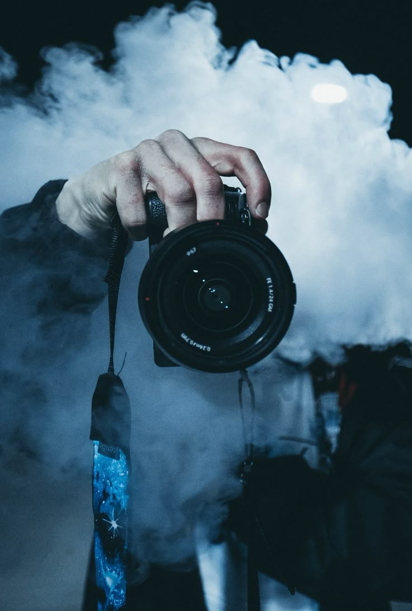

PERSONAL SKILLS

Photography
I have developed strong Photographyskills through hands on experience capturing a variety of subjects, including landscapes,portraits,and events.

Video editing
Skilled in crafting compelling video content, from short cinematic clips to event reels. Proficient with camera work, lighting, and basic editing workflows. Loves bringing ideas to life through motion and emotion.